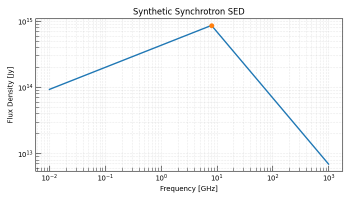
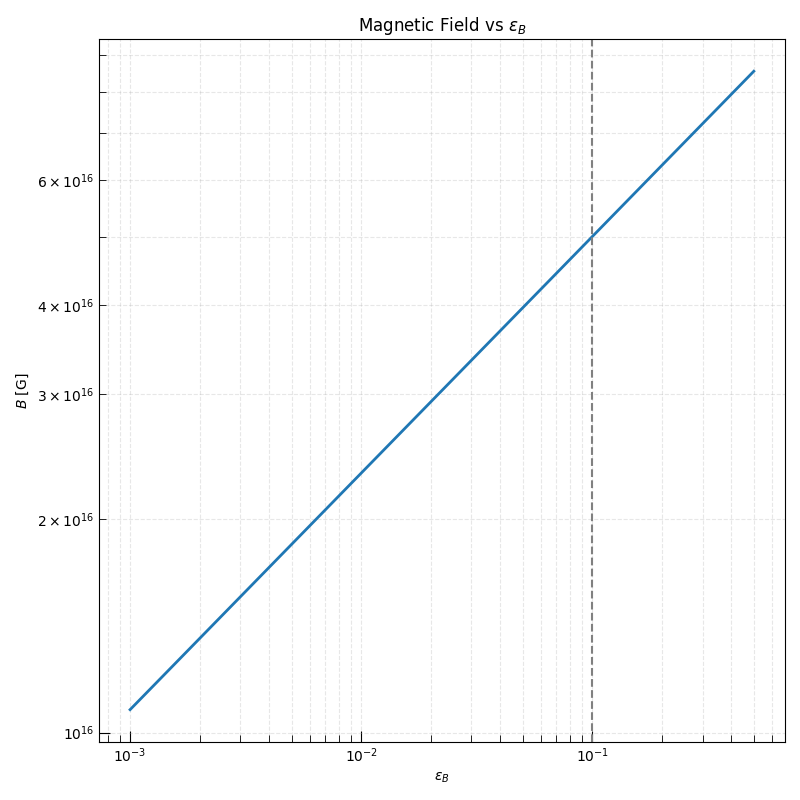

Note
Go to the end to download the full example code.
Equipartition Analysis from a Radio SED#
The equipartition analysis is the standard first-pass method for extracting physical parameters from a synchrotron radio SED. It was popularized by Readhead[1] and is now used routinely in the analysis of radio supernovae, GRBs, and TDEs.
The key insight is that the total energy in relativistic electrons and magnetic fields is minimized — and therefore the source is in equipartition — when the energy is roughly equally shared between particles and fields. Under this assumption, only two observed SED parameters are needed to infer the underlying source physics:
The peak flux density \(F_{\rm pk}\) [Jy], and
The peak (self-absorption) frequency \(\nu_{\rm pk}\) [GHz].
Together these constrain the source radius \(R\), magnetic field \(B\), electron number density \(n_e\), and minimum energy \(U_{\rm min}\) through the inverse closure relations built into Triceratops.
Overview#
In this example we carry out a complete equipartition analysis of a synthetic radio SED:
Construct a representative SED — generate a SSA-dominated synchrotron spectrum from known physical parameters.
Extract the peak observables — read off \(F_{\rm pk}\) and \(\nu_{\rm pk}\) directly from the model.
Apply the inverse closure — use
from_params_to_physics()to recover \(R\), \(B\), \(n_e\), and \(U\).Sweep over microphysical parameters — show how the inferred parameters scale with \(\epsilon_e\) and \(\epsilon_B\).
Produce the standard B–R diagram seen in the observational literature.
Hint
The equipartition analysis yields minimum-energy estimates. The true source energy is always \(\geq U_{\rm min}\). If the source is not in equipartition the inferred parameters are still useful fiducial values.
Relevant API#
from_physics_to_params()from_params_to_physics()
Setup#
import matplotlib.pyplot as plt
import numpy as np
from astropy import units as u
from triceratops.radiation.synchrotron.SEDs import PowerLaw_SynchrotronSED
from triceratops.utils.plot_utils import set_plot_style
set_plot_style()
Generate a Synthetic SED#
We start from a representative synchrotron source and use the forward closure to compute the observable SED.
sed = PowerLaw_SynchrotronSED()
R_true = 5e16 * u.cm
B_true = 3000 * u.G
D_L = 10.0 * u.Mpc
p = 3.0
epsilon_e = 0.1
epsilon_B = 0.1
gamma_min = 1.0
fwd = sed.from_physics_to_params(
B=B_true,
R=R_true,
gamma_min=gamma_min,
gamma_max=1e8,
p=p,
epsilon_E=epsilon_e,
epsilon_B=epsilon_B,
luminosity_distance=D_L,
f_V=1.0,
pitch_average=True,
)
F_pk = fwd["F_peak"]
nu_pk = fwd["nu_m"]
print("=== Forward closure ===")
print(f"Peak flux density : {F_pk}")
print(f"Peak frequency : {nu_pk}")
=== Forward closure ===
Peak flux density : 8.550813643636333e-09 erg / (Hz s cm2)
Peak frequency : 8001230813.575676 Hz
Plot the SED#
freqs = np.geomspace(1e-2, 1000.0, 300) * u.GHz
flux = sed.sed(freqs, fwd["F_norm"], nu_m=fwd["nu_m"], nu_max=fwd["nu_max"], p=p, s=-0.01)
fig, ax = plt.subplots(figsize=(7, 4))
ax.loglog(freqs.to_value("GHz"), flux.to_value("Jy"), lw=2)
ax.scatter([nu_pk.to_value("GHz")], [F_pk.to_value("Jy")], color="C1", zorder=5)
ax.set_xlabel("Frequency [GHz]")
ax.set_ylabel("Flux Density [Jy]")
ax.set_title("Synthetic Synchrotron SED")
ax.grid(True, which="both", ls="--", alpha=0.3)
plt.tight_layout()
plt.show()

Inverse Closure#
Recover physical parameters from observables.
inv = sed.from_params_to_physics(
F_peak=F_pk,
nu_peak=nu_pk,
gamma_min=gamma_min,
gamma_max=1e8,
p=p,
epsilon_E=epsilon_e,
epsilon_B=epsilon_B,
luminosity_distance=D_L,
f_V=1.0,
pitch_average=True,
)
R_rec = inv["R"]
B_rec = inv["B"]
print("\n=== Inverse closure ===")
print(f"Recovered R : {R_rec}")
print(f"Recovered B : {B_rec}")
=== Inverse closure ===
Recovered R : 5.000000000000031e+16 cm
Recovered B : 2999.9999999999977 G
Minimum Energy#
Minimum energy: 3.750000000000065e+56 erg
Scaling with Microphysical Parameters#
We now vary \(\epsilon_e\) and \(\epsilon_B\) to understand how microphysical assumptions affect inferred quantities.
epsilon_B_vals = np.geomspace(1e-3, 0.5, 50)
R_arr, B_arr, U_arr = [], [], []
for eB in epsilon_B_vals:
res = sed.from_params_to_physics(
F_peak=F_pk,
nu_peak=nu_pk,
gamma_min=gamma_min,
gamma_max=1e8,
p=p,
epsilon_E=epsilon_e,
epsilon_B=eB,
luminosity_distance=D_L,
f_V=1.0,
pitch_average=True,
)
Ri = res["R"]
Bi = res["B"].to(u.G)
Ui = Bi.value**2 / (8.0 * np.pi) * (4.0 / 3.0) * np.pi * Ri.to(u.cm).value ** 3 * (1 + epsilon_e / eB)
R_arr.append(Ri.to(u.cm).value)
B_arr.append(Bi.value)
U_arr.append(Ui)
R_arr = np.array(R_arr)
B_arr = np.array(B_arr)
U_arr = np.array(U_arr)
Plot scaling relations#
fig, axes = plt.subplots(1, 1, figsize=(8, 8))
axes.loglog(epsilon_B_vals, R_arr, lw=2)
axes.axvline(epsilon_B, ls="--", color="gray")
axes.set_xlabel(r"$\epsilon_B$")
axes.set_ylabel(r"$B$ [G]")
axes.set_title("Magnetic Field vs $\\epsilon_B$")
axes.grid(True, which="both", ls="--", alpha=0.3)
plt.tight_layout()
plt.show()

Total running time of the script: (0 minutes 0.851 seconds)